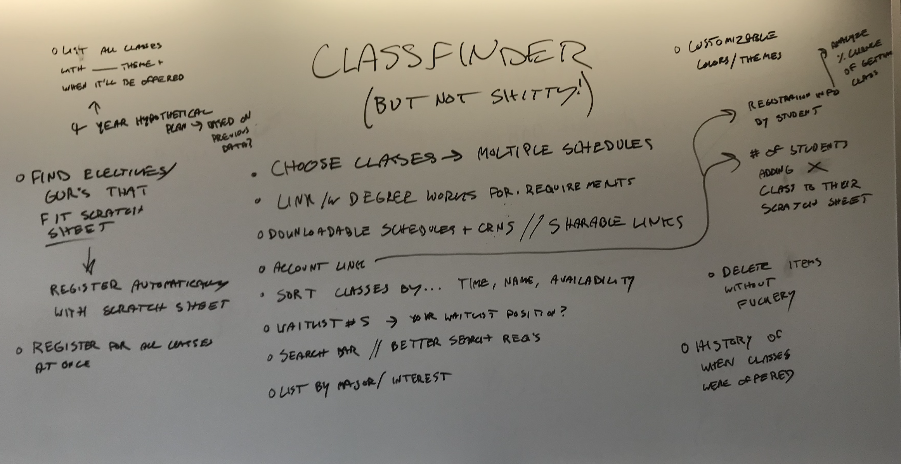
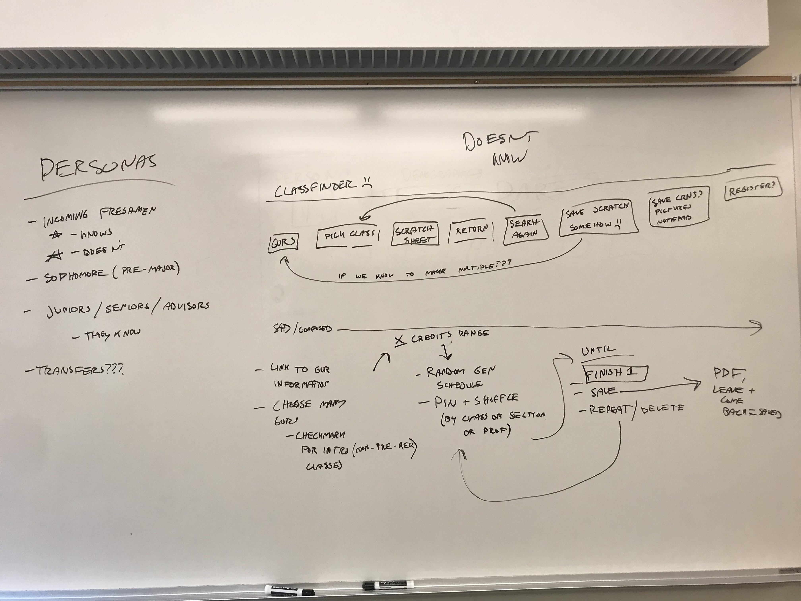

the problem and my role in fixing it
the current solution WWU has for planning schedules and accessing information on courses that
will be offered is classfinder; it was built and deployed 9 years before i was even born, so out of date
is an understatement. the mission this year was to create a completely new solution to planning and building schedules,
with one code base that could be used on web, apple, and android.
because i am a ux minor, my role in this project was ux designer. up until this point,
i have done all the initial user research, created personas and user journeys, did all the wireframing,
and created 3 different versions of a prototype for our "final" design in sketch & figma, while getting
feedback after each one to find the pain points in my work.
old solution
the whiteboard
there are 6 people on the team, and to start the process, we hit the white boards and brainstormed what direction we wanted to take, keeping in mind who would be using the software, and what they would know going in.
 
the user research
my first task was initial user research, including
standing in the main campus square for 6 hours over a couple days, with a huge qr code to a feedback form to get input about
the current solution so we could understand where & how students get their information to start building schedules,
and how we could make the process better. during that time, i also had the priviledge to talk to some
students in person, which led me to insights i wouldn't have gotten otherwise - for example the honors program
has a totally different way of getting information about schedules and necessary classes, and there is a
problematic breakdown in communication between the honors program and the university regarding the information
listed on classfinder.
the feedback form was a huge success. we had 122 responses, and 32% of them were first year students which was
so important, because we're focusing our attention on designing for students who haven't already been using the current solution
and will be using the new one for 3+ more years. the most surprising insight we found from the feedback form
was that many students actually use classfinder to find their classes, instead of using univeristy or department
resources. that was a critical piece of information because as computer science majors we have a very specific
path to follow that is given to you by an advisor, and you have to start following it early. most of the people on the team
had only ever used classfinder to build schedules with the classes they already knew they needed to take, not to find classes to take.
the sketchbook
most of my initial work was in this sketchbook, working through the problems on paper. it includes user stories, flows, information from the old solution, wireframes, and many questions i needed to find answers to


the first attempts
as it goes in design, the first iteration i sent out to be reviewed was NOT a success. my original idea was a "wizard" layout for searching - a step by step, choose-one-thing-per-screen type of layout so it could easily transfer to mobile devices. after i sent the prototype out and got feedback, i realized the layout i came up with was not going to work for the students. this was the first time my design work had been critiqued on a larger scale, and it was definitely humbling at first. after a day of processing my feelings i realized how valuable their perspectives were, and i came up with a new solution for the search screen that i loved, and that would be a much better experience for the users.
the first clickable prototype
the current solution
the current solution, still in progress